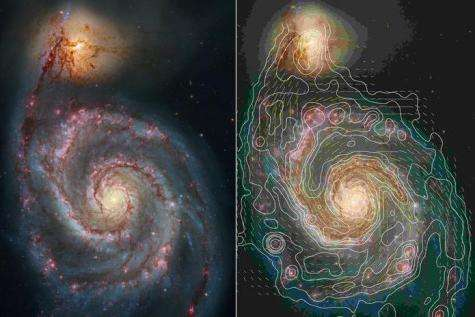
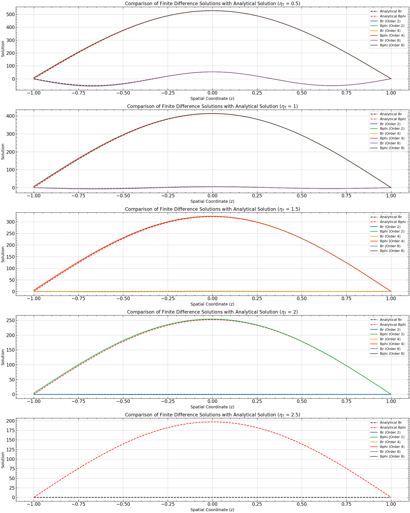

Task 3
Explore the sensitivity of the solutions to the order of the finite differencing algorithm (1D in \(Z\))
Abstract#
Understanding the dynamics of galactic mean-field dynamos is crucial for elucidating the mechanisms underlying magnetic field generation and evolution in galaxies. For this task, we specifically investigate the sensitivity of numerical solutions to the order of finite difference schemes employed in dynamo equations, motivated by the need to balance solution accuracy and computational efficiency. Our objective is to assess how different orders of finite difference schemes impact solution stability and accuracy, with a focus on the sensitivity of the solutions to variations in the magnetic diffusivity parameter. We employ numerical simulations to solve the 1D dynamo equation for magnetic field components Br and Bphi, using varying orders of finite difference schemes. Our findings reveal that higher-order schemes generally lead to improved solution accuracy, as indicated by lower \(L_2\) norms for \(B_r\) and \(B_\phi\). However, we also observe a trade-off, with higher-order schemes becoming increasingly unstable with larger values of the magnetic diffusivity parameter. These results highlight the complex interplay between numerical scheme order, solution stability, and solution accuracy in dynamo simulations. Thus our report, underscores the importance of carefully selecting numerical methods and parameters to ensure reliable and accurate simulations of galactic mean-field dynamos, with implications for understanding magnetic field dynamics in diverse astrophysical contexts.
Introduction#
Galactic magnetic fields play a fundamental role in shaping the dynamics and evolution of galaxies, exerting influence on various astrophysical processes spanning from star formation to galactic structure. Among these, large-scale magnetic fields stand out as key components, exhibiting complex and intriguing behaviors that have captivated astronomers for decades. The genesis and evolution of these large-scale magnetic fields are governed by galactic dynamo theory, a cornerstone framework in astrophysics aimed at elucidating the mechanisms behind magnetic field amplification and maintenance in galaxies. Central to this theory is the concept of dynamo action, wherein the combined effects of differential rotation and turbulent motions within a galactic disk lead to the regeneration and amplification of magnetic fields through self-sustaining processes.
Historically, galactic dynamo theory has undergone significant development, spurred by observational evidence of magnetic fields in galaxies and advancements in theoretical modeling and numerical simulations. Early theoretical frameworks, such as the mean-field dynamo theory proposed by Steenbeck, Krause, and Rädler in the 1960s, laid the groundwork for understanding the generation of large-scale magnetic fields in galaxies through the interplay between fluid motions and magnetic induction. Subsequent studies have delved deeper into the complexities of galactic dynamo processes, exploring the roles of various physical mechanisms, such as turbulence, shear flows, and magnetic helicity, in shaping magnetic field evolution. Numerical simulations have emerged as indispensable tools for probing the intricate dynamics of galactic dynamos, offering insights into the behavior of magnetic fields across different galactic environments and under varying conditions.

Figure 1: illustrates the structure of a spiral galaxy, namely the Whirlpool, highlighting the presence of large-scale magnetic fields threading through its disk. Observational studies utilizing techniques such as polarimetry and Faraday rotation have provided valuable insights into the morphology and strength of galactic magnetic fields, revealing their complex and often ordered configurations. Reproduced from [4].
While a vast body of literature exists on galactic magnetic fields and dynamo theory, few studies have specifically addressed the sensitivity of numerical solutions to the order of finite difference schemes in dynamo simulations. Nonetheless, the wealth of knowledge accumulated from previous research serves as a solid foundation for our investigation, guiding us in exploring the intricacies of galactic dynamo processes and their numerical modeling.
Methods#
We have used finite difference methods to obtain accurate numerical solutions of the governing dynamo equations. These methods are generally preferred as they provide a systematic approach to discretizing the spatial domain and approximating derivatives, allowing for efficient computation of magnetic field evolution. Moreover, these methods have the capacity to handle complex geometries and boundary conditions, making them versatile for modeling diverse dynamo systems. However, they need to be properly implemented to ensure numerical stability, preventing the amplification of errors during the simulation.
Central to finite difference simulations is the Courant-Friedrichs-Lewy (CFL) condition, which governs the choice of time step (Δt) to ensure numerical stability. For diffusion-dominated problems like dynamo simulations, the CFL condition is given by:
where:
\(\alpha\) is the magnetic diffusivity,
\(\Delta t\) is the time step, and
\(\Delta x\) is the spatial grid spacing.
Ensuring that the CFL number remains below 0.5 guarantees stable time integration and accurate representation of the solution.
For this project, we aim to investigate higher-order differences for solving dynamo equations. Higher-order finite difference schemes offer improved accuracy by capturing finer details in the solution compared to lower-order methods. However, even with higher accuracy, finite difference approximations inherently introduce errors due to truncation and discretization. The error in finite difference approximations arises primarily from two sources:
Truncation Error: This error stems from the truncation of the infinite Taylor series expansion used to derive finite difference formulas. Higher-order finite differences reduce truncation error by including more terms in the series expansion, resulting in improved accuracy.
Discretization Error: Discretization error arises from the approximation of continuous derivatives on a discrete grid. As the grid spacing decreases, discretization error decreases, leading to more accurate solutions. However, reducing the grid spacing increases computational cost.
Theory of Higher-Order Finite Differences#
Finite difference approximations for derivatives are based on Taylor series expansions. The general form of a Taylor series expansion for a function \(f(x)\) about a point \(x_0\) is given by:
To approximate derivatives, we truncate this series after a certain number of terms and solve for the derivative term. Higher-order finite difference methods involve including more terms in the Taylor series expansion, resulting in increased accuracy.
The general form of a higher-order finite difference approximation for the first derivative \(f'(x_0)\) can be represented as:
where \(c_i\) are the coefficients of the finite difference scheme, \(m\) and \(n\) represent the number of points on the left and right sides of \(x_0\), respectively, and \(\Delta x\) is the step size.
Table of Coefficients for Higher-Order Finite Differences#
Derivative |
Accuracy |
-5 |
-4 |
-3 |
-2 |
-1 |
0 |
1 |
2 |
3 |
4 |
5 |
|---|---|---|---|---|---|---|---|---|---|---|---|---|
1 |
2 |
-1/2 |
0 |
1/2 |
||||||||
4 |
1/12 |
-2/3 |
0 |
2/3 |
-1/12 |
|||||||
6 |
-1/60 |
3/20 |
-3/4 |
0 |
3/4 |
-3/20 |
1/60 |
|||||
8 |
1/280 |
-4/105 |
1/5 |
-4/5 |
0 |
4/5 |
-1/5 |
4/105 |
-1/280 |
|||
2 |
2 |
1 |
-2 |
1 |
||||||||
4 |
-1/12 |
4/3 |
-5/2 |
4/3 |
-1/12 |
|||||||
6 |
1/90 |
-3/20 |
3/2 |
-49/18 |
3/2 |
-3/20 |
1/90 |
|||||
8 |
-1/560 |
8/315 |
-1/5 |
8/5 |
-205/72 |
8/5 |
-1/5 |
8/315 |
-1/560 |
Table 1: The above table illustrates the coefficients for different orders of accuracy for both the first and second derivatives using higher-order finite difference schemes. These coefficients are used to calculate the approximations of derivatives at various grid points, contributing to the accuracy of the numerical solution.
Higher-order finite difference schemes minimize error by incorporating additional points in the stencil, thereby capturing finer details of the solution. By including more grid points, these methods effectively reduce the discrepancy between the numerical approximation and the true solution. However, achieving high accuracy with higher-order schemes necessitates denser grids and finer discretization, which can escalate computational cost. The computational complexity of these methods grows rapidly with the order of the finite difference approximation, as higher orders require more grid points and additional computations per grid point. Consequently, higher-order schemes demand more computational resources and longer execution times compared to lower-order methods.
Results#
For the simulation we have the following initial conditions for \(B_r\) and \(B_\phi\) and then use finite difference methods and time-stepping routines to numerically solve the dynamo equations, evolving the magnetic field solutions over time. :
Further, we will compare the numerical solutions with the analytical solutions derived from the dynamo equations:
We evaluate the agreement between numerical and analytical solutions to assess the accuracy of our methods and analyze any discrepancies to understand the dynamo system’s behavior. To calculate the simulation time, one can record the start time \(t_{\text{start}}\) and the end time \(t_{\text{end}}\) using timing functions and then compute the elapsed time \(\Delta t = t_{\text{end}} - t_{\text{start}}\).
For the L2 norm, the formula is given by:
where \(u_{\text{numerical}}\) and \(u_{\text{analytical}}\) are the numerical and analytical solutions, respectively, and \(n\) is the total number of spatial points.
Test 1: Evaluation of Solution Accuracy and Computational Cost with Higher Order Discretization Schemes#
The simulation results from Test 1 demonstrate the trade-off between solution accuracy and computational cost when employing higher-order finite difference schemes. As the order of the finite difference scheme increases, the computational time also increases, reflecting the increased complexity of the numerical calculations. However, higher-order schemes tend to produce solutions with lower L2 norms, indicating better accuracy compared to lower-order schemes.

Figure 2: This plot illustrates the solution of the dynamo equations using different orders of finite difference schemes. Each curve represents the magnetic field solution (both \(B_r\) and \(B_\phi\)) obtained with varying orders of finite differences.
Order |
Time (s) |
L2 Norm Br |
L2 Norm Bphi |
|---|---|---|---|
2 |
2.0573041439056396 |
13.733984971830152 |
39.80352747733797 |
4 |
3.1603808403015137 |
12.301714047444344 |
36.65689737842187 |
8 |
5.144669055938721 |
11.866796403667742 |
35.70839970827103 |
Table 2: Illustrates the variation of computational time and L2 norms for different orders of finite difference schemes. From the figure, it is evident that the computational time increases exponentially with the order of the scheme. For example, while the second-order scheme has a computational time of approximately 2.09 seconds, the eighth-order scheme requires around 4.52 seconds to compute the solution.
However, despite the increase in computational time, higher-order schemes exhibit improved accuracy, as reflected by the decreasing trend in L2 norms. The L2 norms for both Br and Bphi decrease as the order of the scheme increases, indicating better agreement with the analytical solution. For instance, the L2 norm for Br decreases from approximately 13.73 for the second-order scheme to around 11.87 for the eighth-order scheme.
Test 2: Simulation Results with Varying Magnetic Diffusivity \(\eta_T\)#
The simulation results for different values of magnetic diffusivity \(\eta_T\) provide insights into the influence of this parameter on the dynamo simulation. As the magnetic diffusivity increases, the rate at which magnetic fields diffuse through the medium also increases, affecting the evolution of magnetic fields in the dynamo equations.
 Figure 3: This plot demonstrates the sensitivity of the numerical solution to changes in magnetic diffusivity ((\eta_T)). As the value of (\eta_T) increases, the stability of the solution decreases, eventually leading to a divergent solution.
\(eta_Y\) |
Order |
Time (s) |
L2 Norm Br |
L2 Norm Bphi |
|---|---|---|---|---|
0.5 |
2 |
2.03795 |
26.1254 |
39.8843 |
0.5 |
4 |
2.77515 |
24.0766 |
36.9819 |
0.5 |
8 |
4.4053 |
23.492 |
36.0994 |
1 |
2 |
1.82199 |
13.734 |
39.8035 |
1 |
4 |
2.83364 |
12.3017 |
36.6569 |
1 |
8 |
4.44742 |
11.8668 |
35.7084 |
1.5 |
2 |
1.76688 |
9.33019 |
37.1146 |
1.5 |
4 |
2.80644 |
8.05084 |
33.7434 |
1.5 |
8 |
|||
2 |
2 |
1.83046 |
7.01351 |
33.7372 |
2 |
4 |
2.86099 |
||
2 |
8 |
4.60799 |
||
2.5 |
2 |
1.77133 |
||
2.5 |
4 |
2.81081 |
||
2.5 |
8 |
4.55267 |
Table 3: The above table presents the simulation results for different values of \(\eta_T\), showing the variation of computational time and L2 norms for Br and Bphi. From the figure, it can be observed that as \(\eta_T\) increases, the computational time also increases for all orders of finite difference schemes. This is expected, as higher magnetic diffusivity requires more computational resources to accurately simulate the diffusion process.
Additionally, the L2 norms for both Br and Bphi exhibit a decreasing trend with increasing values of \(\eta_T\), indicating better agreement with the analytical solution. This suggests that higher magnetic diffusivity leads to more stable and accurate numerical solutions, as the CFL condition is better satisfied.
Conclusions#
In our study of the dynamo equation, we explored the influence of the magnetic diffusivity parameter, denoted by \(\eta_t\), on the stability and accuracy of numerical simulations. Specifically, we focused on how \(\eta_t\) controls the CFL condition, which determines the maximum allowable time step in numerical simulations to maintain stability.Our analysis revealed that the CFL condition is directly affected by the ratio of the time step \(\Delta t\) to the square of the spatial discretization \(\Delta x\) and the magnetic diffusivity parameter \(\eta_t\). This relationship ensures that changes in the solution over time do not propagate too quickly relative to the spatial discretization. As we increased the order of the finite difference schemes used in our simulations, we observed improvements in solution accuracy, as evidenced by lower L2 norms for both Br and Bphi. However, we also encountered a trade-off: while higher-order schemes yield better accuracy, they become increasingly unstable with larger values of \(\eta_t\). Interestingly, our results demonstrated that for certain values of \(\eta_t\), lower-order schemes could perform comparably well to higher-order schemes in terms of our chosen metrics. This suggests that there is a critical balance between the accuracy gained from higher-order schemes and the stability required to prevent solution blow-up. Furthermore, as \(\eta_t\) increased beyond a certain threshold, even lower-order schemes struggled to maintain stability, leading to divergent solutions. This underscores the importance of carefully selecting both the numerical scheme and the value of \(\eta_t\) to ensure reliable and accurate simulations.
By this work we aim to highlight the intricate interplay between the magnetic diffusivity parameter \(\eta_t\), the order of finite difference schemes, and the stability of numerical solutions in dynamo equations. By understanding and appropriately controlling these factors, one can model and analyze magnetic field dynamics in various physical systems, from astrophysical phenomena to laboratory experiments. However, caution must be exercised to avoid instability issues associated with high values of \(\eta_t\) and excessively high-order schemes, emphasizing the need for careful consideration and validation in numerical simulations of dynamo processes.
References#
[1] Shukurov, A., & Subramanian, K. 2022, Astrophysical Magnetic Fields: From Galaxies to the Early Universe, Cambridge University Press
[2] Strogatz, S. 2014, Nonlinear Dynamics and Chaos: With Applications to Physics, Biology, Chemistry, and Engineering (Studies in Nonlinearity), Westview Press, 2nd edn.
[3] Bradie, B. A Friendly Introduction to Numerical Analysis
[4] Science Chatter (2019), “Once Upon a Dynamo in the Early Universe,” Science Chatter Blog, Available at: here (Accessed: April 28, 2024).